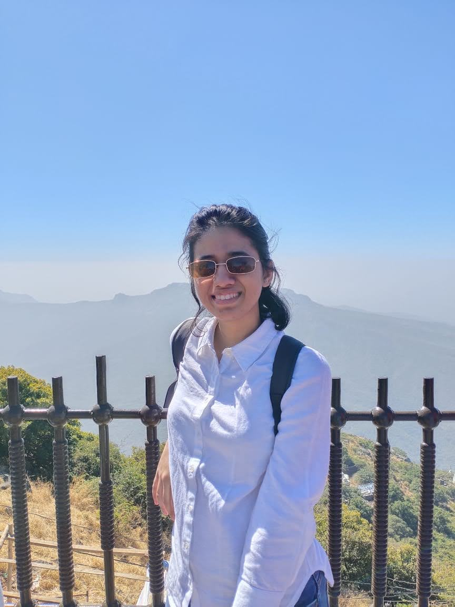

About Me
I am a UX Researcher with a background in Accessory Design. I have conducted user research studies using a variety of methods, including usability testing, surveys, and interviews. My current focus is to indulge in design practices that bring about a positive impact on society. I am a willing learner and I adore simplicity and thought process in work, proficient with analyzing both qualitative and quantitative data to drive solutions that meet and exceed user needs.